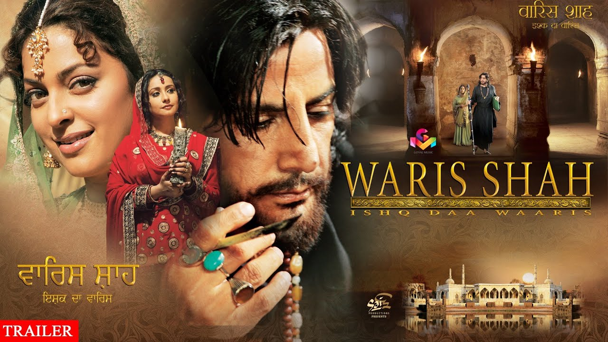

Waris Shah

Mughal Ruler Aurangzeb bans music in India, since he believes that music turns a person away from God. This ban continues for the next generations. Music lovers and singers start living in secret places away from cities. Baba Makhdum (Mukesh Rishi) is staying near Kasur with some of his followers and practices music; Waris Shah (Gurdas Maan) comes and joins him. Baba Makhdum tells Waris that he appreciates his talent, but asks Waris to feel the pain to get the best out of him.
Directed by Manoj Punj
Written by Suraj Sanim
Produced by Manjeet Maan (Sai Productions)
Starring Gurdas Mann
Juhi Chawla
Divya Dutta
Sushant Singh
Gurkirtan
Music by Jaidev Kumar
Release date
October 6, 2006
Running time 138 minutes
Country India
Language Punjabi